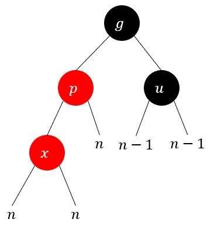
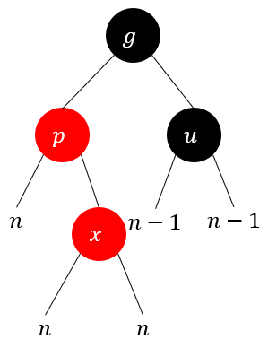
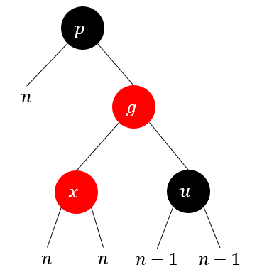
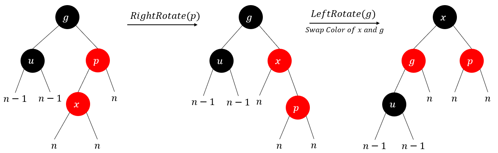

红黑树
前言
红黑树是一个很有魅力的数据结构，拥有非常平均的查询、插入、删除时间复杂度，适用场景也非常多，不少区间树也是基于红黑树实现。
不过确实有不少人苦于红黑树的实现，也有不少人只是记录红黑树在插入或删除时根据怎样怎样的情况做怎样怎样的操作，红黑树的插入删除确实也比较复杂，尤其是删除操作，因此本文会通过一些思路来帮助你理解构造红黑树的一些思路而不全是死记硬背。
本文假设你对二叉树的一些基本概念都已经有所掌握，比如内部节点、叶子结点、父节点、子节点、兄弟节点、前驱结点、后继结点、树的高度、节点的深度、二叉搜索树等概念都是清楚的，本文不会讲解这些基础的内容。
另外本文会尽可能地避免过多的数学，而是尽量通过直观上的、直觉上的感受来讲解红黑树。
为什么选择红黑树
红黑树的定义
一棵红黑树需要满足以下条件：
- 所有的节点不是黑色就是红色。
- 根节点是黑色。
- NIL节点是黑色。
- 红色节点的父节点一定是黑色。
- 任意一个节点到其所有子孙下的NIL节点的一条简单路径上的黑色节点数量相同，这个数量称为Black-Height。
比如图1就展示了一棵红黑树：
所有NIL节点的Black-Height为零，上图中所有内部节点的Black-Height都标注在该节点旁边，有个小数字。
上述的条件也说明了另一个事实，那就是一棵红黑树的任意子树都至少满足1、3、4、5这些条件，这点会成为分析红黑树修复的一个重要前提。
有几个容易混淆的点这里要强调一下，比如定义中的NIL节点不是常规上理解的叶子节点，在红黑树中NIL节点确实需要扮演叶子节点的角色，但是务必不能将NIL节点忽略，图2是一个反例：
如果随意地忽略掉NIL节点，那么会有人认为上图是一棵红黑树。由于NIL节点确保了每个内部节点都有两个叶子结点，如果随意忽略，那么有些人可能会遗漏掉上图中E节点存在右孩子这一事实，从而误认为满足条件5而认为是一棵红黑树，而实际上上图违背了条件5，因此不是一棵红黑树。
红黑树的性能
红黑树是二叉搜索树，\(n\)个节点(不包括NIL节点)的红黑树的高度期望为\(\textrm O(\log_2n)\)，这也说明了红黑树的查询、插入、删除的时间复杂度均为\(\textrm O(\log_2n)\)。
那么如何证明红黑树的高度期望呢？数学上当然可以使用归纳法去证明，不过这里提供一种直觉上的证明，假设有图3这样一棵红黑树：
现在将所有的红色节点与它的父节点合并，并将它的孩子节点继承给父节点，那么上面的红黑树会变成图4所示：
假设原本红黑树的NIL节点数量为\(l\)，合并后的树的NIL节点数量为\(l'\)，首先根据二叉树的性质有\(l=n+1\)，然后合并后并不会影响到NIL节点的数量，因为NIL节点全部是黑色，自然就会留在原地或成为某个黑色节点的孩子节点，因此\(l'=l=n+1\)。
假设原本红黑树的高度为\(h\)，合并后的树的高度为\(h'\)，合并后的树每个节点的孩子节点将会是\(2\)到\(4\)个，这说明\(2^{h'}\leq l'\leq 4^{h'}\)，这里只关心左半部分，也就是\(2^{h'}\leq l'\)，从而推导出\(h'\leq\log_2l'=\log_2(n+1)\)。再来看\(h\)和\(h'\)的关系，由于红色节点全部被合并，但是根据红黑树的条件4说明在红黑树的某条简单路径上，最多出现红黑相间的情况，此时红色节点的数量不会超过黑色节点的数量，所以\(h\leq 2h'\leq2\log_2(n+1)\Rightarrow h=\textrm O(\log_2n)\)。
其实合并后的树也有它专门的名称：2-3-4树，想必应该是有不少人听过的。
实际上红黑树的NIL节点的最大深度和最小深度的差不会超过\(2\)，因为任意两条从根节点出发的简单路径上，黑色节点与黑色节点之间最多存在一个红色节点，拜红黑树的条件4所赐。
红黑树的插入与删除
修复策略
这部分则是红黑树最复杂的部分，尤其是删除操作，在开始展开讲插入操作和删除操作之前，现来了解一些能用的修复手段，因为不论是新增节点还是删除节点，都避免不了对节点进行重新染色，红黑树的条件4和条件5决定了这一点，而条件5则是非常棘手的问题，因此不论是插入还是删除，优先确保条件5的成立再尝试修复其他条件是更好的策略。
修复的方向是从底部到顶部递归修复，因为此时在维持条件5的前提下，不会影响到同等级的其他子树，这个会在讲插入和删除的时候体会到。 另外在这个大章节中，我不会将NIL节点视为叶子节点，而是将实际存在的叶子节点作为叶子结点，嗯，说起来有点绕，不过你应该能明白我的意思。
树的旋转
在AVL树中，树的旋转操作主要是为了调整节点的最大深度从而使二叉树仍然平衡，但是在红黑树中，树的旋转主要用于调整颜色，不论目的是什么，现描述一下树的旋转的概念。
树的旋转分为两种，一种是左旋，一种是右旋，下文用\(\textrm{LeftRotate}\)和\(\textrm{RightRotate}\)两个函数来表示。
旋转的过程如图5所示：
树的旋转拥有很神奇的特点就是它不会影响到节点之间的顺序关系，比如上图中，不论是左侧还是右侧，都满足\(\alpha<x<\beta<y<\gamma\)，这也是为什么树的旋转是一个重要的工具。
右旋的过程如图6所示：
\(\textrm{RightRotate}(y)\)：将\(\beta\)(左孩子的右孩子)与\(x\)(左孩子)解绑并将\(x\)与\(y\)解绑，然后将\(y\)系在\(x\)的右孩子上，最后再将解绑的\(\beta\)系在\(y\)的左孩子上，此时局部根节点由\(y\)变成\(x\)，注意原本\(y\)的父节点现在成为了\(x\)的父节点。
左旋的过程如图7所示：
\(\textrm{LeftRotate}(x)\)：将\(\beta\)(右孩子的左孩子)与\(y\)(右孩子)解绑并将\(y\)与\(x\)解绑，然后将\(x\)系在\(y\)的左孩子上，最后再将解绑的\(\beta\)系在\(x\)的右孩子上，此时局部根节点由\(x\)变成\(y\)，注意原本\(x\)的父节点现在成为了\(y\)的父节点。
树的旋转在保留了顺序的前提下修改了树的结构，但是这里还先不讲染色相关的逻辑，染色相关的逻辑会在插入或删除中继续阐述。
Pull/Push Black
重新染色有两种非常方便的操作，它能保证红黑树的条件5不被破坏，它们分别为Pull Black和Push Black，下面用\(\textrm{PullBlack}\)和\(\textrm{PushBlack}\)来表达这两个函数。
如果令红色的值为\(0\)，黑色的值为\(1\)，那么这个值可以表达该颜色对Black-Height的贡献值(红色不计入Black-Height，黑色计为\(1\)个Black-Height)，在删除的时候会引入一种新的颜色称为双黑(Double-Black)，它的值为\(2\)，这里就把它当做第三种颜色即可。
这两种操作如图8所示：
\(\textrm{PullBlack}(x)\)：令\(x\)节点的颜色值\(+1\)，令两个孩子节点的颜色值\(-1\)，\(x\)的颜色值不能为\(2\)。需要注意两点，其一是孩子节点不能是NIL节点，因为NIL节点只能是黑色；其二是修复后任意一个孙子节点不能有红色，否则孩子节点的局部会破坏红黑树的条件4(修复方向是底部到顶部)。
\(\textrm{PushBlack}(x)\)：令\(x\)节点的颜色值\(-1\)，令两个孩子节点的颜色值\(+1\)，\(x\)的颜色值不能为\(0\)。需要注意一点，其一是孩子节点不能是黑色，不然孩子节点会变成双黑节点(因为双黑节点是最终要根除的颜色，而修复方向是底部到顶部，违背了修复方向)。
这两种操作由于其简单性，是在修复过程优先考虑的，只有行不通时才会再考虑旋转操作。
插入操作
根据二叉搜索树的性质，插入的节点最终一定是叶子节点，由于红黑树的条件5难以控制，因此需要先保证插入新节点后条件5仍然满足，因此新插入的节点默认为红色(红色对Black-Height没有贡献)。
之前有提到过修复的过程是从底部到顶部，因此要将插入修复的情况视为一般情况，即待修复的节点可能是树中的任意一个节点，因此接下来讨论的情况都是基于任意情况，假设待修复节点为\(x\)，那么\(x\)一定是红色，因为如果\(x\)是黑色，那么一定不会破坏红黑树的条件4，从而停止修复。在插入一个新节点后，\(x\)从新节点开始。
如果待修复节点\(x\)的父节点为黑色，这是最简单的情况，直接停止修复即可。
如果待修复节点\(x\)的父节点为红色该怎么办呢？现来看图9：
上图中没有圈的字母表示它的局部Black-Height，只是想表达现在这个情况仍然满足条件5。首先如果\(p\)此时为红色，那么\(g\)一定为黑色(条件4)，要想修复\(x\)就得想办法让\(p\)变成黑色，那么第一个想到的是\(\mathrm{PushBlack}(g)\)，但是要想使用这个操作，\(u\)必须是红色的，所以不妨先考虑第一种情况：
叔叔节点\(u\)是红色，此时的情况如图10所示：
此时满足\(\mathrm{PushBlack}\)的条件，因此只需要执行\(\mathrm{PushBlack}(g)\)即可修复\(x\)，但是此时由于\(g\)节点变成了红色，因此下一个需要修复的节点变成了\(g\)。
叔叔节点\(u\)是黑色，此时的情况则变得有点复杂，首先\(x\)可能是\(p\)的左孩子亦或是右孩子，而\(p\)又可能是\(g\)的左孩子亦或是右孩子，不论怎样，先来看其中一种情况吧。
LL Case(\(x\)是左孩子，\(p\)是左孩子)，此时的情况如图11所示：
 此时由于没有了简单的修复手段，因此只能考虑旋转，目的是将\(p\)变成黑色，不妨对\(g\)做右旋操作，然后令\(p\)变成黑色看看呢？这个时候会变成图12的情况：
这个时候左侧的局部Black-Height仍然是\(n\)，而右侧的局部Black-Height是\(n+1\)，正好多了\(1\)，而且\(g\)正好在两个黑色节点当中，那把\(g\)染成红色不就行了吗？而且就算\(u\)是NIL节点也不会影响结果，所以最终的手段如图13所示：
所以在不清楚怎么做之前，不妨先尝试一下，这样就很容易推理出结果。
RL Case(\(x\)是右孩子，\(p\)是左孩子)，此时的情况如图14所示：
 这个时候如果你尝试LL Case的处理方式会发现行不通，会变成图15中的样子：
 虽然条件5仍然满足，但是\(g\)和\(x\)冲突了，显然是不行的，然而幸运的是我们知道怎么让RL Case变成LL Case，如果先将\(p\)进行左旋的话，正好就能得到LL Case的情况，如图16所示：
RR Case(\(x\)是右孩子，\(p\)是右孩子)：这个情况和LL Case是对称的，结论如图17所示：
LR Case(\(x\)是左孩子，\(p\)是右孩子)：这个情况和RL Case是对称的，结论如图18所示：

叔叔节点为黑色的四种情况下，由于最终局部根节点都变成了黑色，因此不需要继续递归修复，而叔叔节点为红色的情况由于局部根节点变成了红色，因此需要继续递归修复。
需要注意的是在做旋转操作时要处理好旋转的节点是根节点的边界情况，在写红黑树的时候会遇到很多需要非常小心的边界情况，小心分析即可。
删除操作
删除操作则是红黑树操作中最复杂的了，这里也是作为压轴来讲，关键在于两个问题：
问题1：删除的节点可能是树中间任何一个节点，而根据之前的修复策略是从底部到顶部进行修复，也就是说得想办法把删除任意节点的问题转变成删除叶子节点的问题。
问题2：之前提到了优先保证条件5的成立，但是删除一个节点如何保证条件5仍然成立呢，所以需要一些取巧的方式去做删除操作。
先来总结一下删除节点可能发生的情况：
情况1：删除的是红色的叶子节点，这是最简单的情况，直接删除即可，不会破坏任何红黑树的条件。
情况2：删除的是黑色的叶子节点，嗯，这明显是一个很复杂的情况。
情况3：删除的是内部节点，有办法将它变成1,2两种情况吗？
现讨论一下情况3，如果删除的是内部节点，这意味着删除的节点至少有一个孩子节点，这也意味着存在一个前驱节点或后继节点。
如果前驱节点或后继节点是叶子节点，那么就将前驱节点或后继节点的数据和目标节点交换。
如果前驱结点或后继节点有孩子节点，那孩子节点一定是叶子节点，此时先将前驱节点或后继节点的数据和目标节点交换，然后再与叶子节点的数据交换，然后改为删除叶子节点，这样就变成了1,2两种情况了。
假设删除的节点为\(x\)，归纳一下就是：
如果\(x\)存在左孩子，那么左孩子的RightMost节点就是前驱节点；如果\(x\)存在右孩子，那么右孩子的LeftMost节点就是后继节点。
上述公理是非常基础的，这里不会展开讲，总之这样就将情况3转变成了情况1和情况2，同时也解决了问题1，而情况1非常简单，这样就只需要分析一下情况2就行了。
那么这就引来了问题2，如何优先保证条件5的成立，然后再从底部往顶部修复呢？其实之前在讲Pull/Push Black章节里面有提到，引入一个新的概念，被删除的节点被视为双黑(Double-Black)节点，其颜色值为\(2\)，为什么颜色值为\(2\)呢，因为被删除的节点本身原本有两个NIL节点，算上它自身的黑色，意味着它的局部Black-Height是\(2\)，而现在要删除这个节点，那么只需要将其变成黑色(颜色值为\(1\))，此时它就可以变成NIL节点，就可以安全地将其删除了。
和插入操作类似，由于是递归修复，因此要考虑的是任意情况，假设待修复节点为\(x\)，那么\(x\)一定是双黑节点。在删除一个黑色叶子节点时，\(x\)从该黑色叶子节点开始。
仔细一想，这个情况就复杂地多，该如何开始呢？首先因为\(x\)是双黑节点，这说明它的兄弟节点一定是存在的，否则左右的局部Black-Height肯定不可能相等，那如果兄弟节点是黑色的就有可能执行Pull Black，但是还要满足什么情况呢，那就是兄弟节点的孩子节点也都为黑色的情况，来看一下。
兄弟节点为黑色且兄弟节点的孩子节点都为黑色，此时情况如图19所示：
这个时候，虽然\(p\)既可能是红色又可能是黑色，但是不论如何都可以对\(p\)进行Pull Black操作，如果\(p\)为红色，那么情况会如图20所示：
此时待修复节点变成了黑色，且\(p\)只是变成了黑色，完美达成了修复，而如果\(p\)节点本身为黑色，那么这次修复会将\(p\)变成双黑节点，那么也只需要继续递归修复\(p\)节点即可。
这显然是最简单的情况，且与\(x\)是左右孩子无关。
但是如果\(sl,sr\)任意一个节点为红色，这个策略就失效了，因为这会导致\(s\)的局部子树破坏了条件4，那么就来考虑一下\(sl,sr\)存在红色该怎么处理吧，而如果你先考虑\(sl\)为红色的情况的话容易陷入死胡同，所以不妨先考虑\(sr\)为红色的情况。
\(x\)是左孩子，兄弟节点为黑色，且兄弟节点的右孩子为红色，LR Case，此时情况如图21所示：
既然Pull/Push Black策略行不通，就尝试一下插入操作里面用到的旋转策略，比如对上图\(p\)进行左旋并交换\(s\)和\(p\)的颜色后会得到图22的结果：
乍看好像有点怪，不过此时如果将\(x\)标黑，左侧的局部Black-Height仍然为\(n+1\)，而右侧只需要将\(sr\)标黑也能得到\(n+1\)的局部Black-Height，且标黑是安全的操作，因此这个方案是可行的，总结下来如图23所示：
接下来就可以来考虑另一种情况了。
\(x\)是左孩子，兄弟节点为黑色，且兄弟节点的左孩子为红色，LL Case，此时情况如图24所示：
如果先考虑这个情况，那很容易被找不着北，但是在已经有了上一种情况的解决方案后，这个情况的解决方案也会变得非常明显，如果先对\(s\)进行右旋并交换\(s\)和\(sl\)的颜色就能把情况变成上一种情况，所以解决方案如图25所示：
可以看出不论是LR Case还是LL Case都是和另一个孩子节点的颜色无关的，因此在编码时可以任选一种优先级。
\(x\)是右孩子，兄弟节点为黑色且兄弟节点的左孩子为红色，RL Case，这个情况和LR Case是对称的，因此解决方案如图26所示：
\(x\)是右孩子，兄弟节点为黑色且兄弟节点的右孩子为红色，RR Case，这个情况和LL Case是对称的，因此解决方案如图27所示：
可以看出除了第一种，接下来的四种情况都不需要进行递归修复，因为并没有出现新的双黑节点。但是还漏了兄弟节点为红色的情况，这个时候父节点一定是黑色，这两种情况比较特别，下面来分析一下：
\(x\)是左孩子，兄弟节点为红色，L Case，此时情况如图28所示：
如果对\(p\)进行左旋操作并交换\(s\)和\(p\)的颜色，你会发现这个时候仍然满足条件5，但是会出现一些微妙的变化，因为\(s\)的孩子节点一定是黑色的，这意味着做了上述旋转操作后，\(x\)所在的情况变成了兄弟节点为黑色的情况，如图29所示：
而这个时候不需要改变待修复节点\(x\)，继续再修复一次\(x\)即可。
\(x\)是右孩子，兄弟节点为红色，R Case，这种情况和L Case是对称的，解决方案如图30所示：
和L Case一样，不需要改变待修复节点\(x\)，继续再修复一次即可。
至此所有的删除情况就都考虑到了，最后别忘记把最初的待删除节点删掉。删除的复杂性在于很难思考各种情况的顺序，不同情况之间都是可以嵌套使用的，但是有了这种方法，不用特地去死记硬背，如果忘记了就自己尝试着推理一下，心里有个大概的话，这种分析就不会很难了。
总结
红黑树的修复思路基本就讲完了，实际编码的过程中其实还有很多需要考虑的细节，比如递归的时候如何处理根节点，或者是各种解绑和绑定的操作，指针修改的顺序等等，这些都是要非常小心的，编码完成后记得写个单元测试，随机取\(1000000\)个不同的数字进行增删等操作，最好在每次循环都提前记录一下当前的随机种子，写好断言，如果出现问题就打印出最新的随机种子，从而重现现场，方便查找bug。
虽然基本大部分引擎中都已经有实现了类似SortedSet这样的数据结构，但是很多时候会需要实现特定情形下的区间树，而这个时候可能就需要自己去实现一棵红黑树，而一棵泛用的区间树也是很难实现的，至少笔者在尝试的过程中遇到了不少问题，不管如何，思路始终是最重要的，学习思路比死记硬背要更加重要，望共勉。